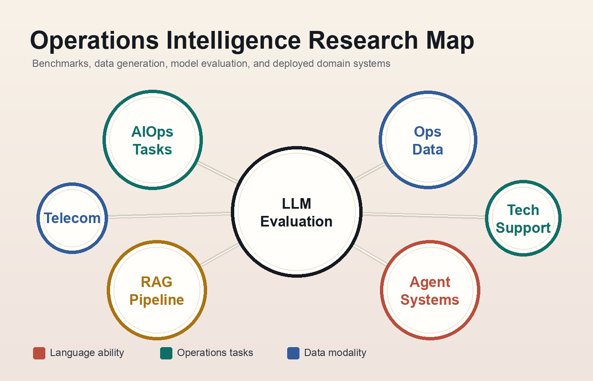

AIOps evaluation
Benchmarking LLM capabilities across language ability, operations tasks, and data modalities.
Tsinghua CS · LLM Evaluation · AIOps
M.Eng. candidate in Computer Science and Technology at Tsinghua University. I work on LLM evaluation, AIOps benchmarks, RAG and Agent systems, and domain-specific model adaptation.

Research Focus
Benchmarking LLM capabilities across language ability, operations tasks, and data modalities.
Using RAG and Agent pipelines to transform product documentation into high-quality domain QA data.
Fine-tuning and evaluating models for telecom, technical support, CI logs, and operations workflows.
Publications
A benchmarking framework for evaluating operations-oriented capabilities of large language models.
9,000+ AIOps QA pairs, multi-paradigm evaluation, and a public leaderboard for LLMs in IT operations.
LeaderboardA cross-domain skeleton augmentation method for improving action recognition transfer.
An evaluation framework for technical support QA scenarios and model response quality.
Projects and Experience
Huawei, CAS, CAICT
Designed a taxonomy and three-dimensional evaluation system for AIOps foundation models. Built RAG and Agent based benchmark generation pipelines and delivered evaluation systems inside Huawei and on the CAICT benchmarking platform.
NetMan Lab
Curated 9,000+ AIOps QA pairs, maintained the OpsEval leaderboard, and evaluated 20+ mainstream LLMs with LLM-as-a-Judge, RAGAS, and frequency-based analysis.
Tencent TEG, Algorithm Intern
Optimized abnormal log retrieval with keyword tables and context-window matching, then designed automatic answer evaluation with keyword matching, TF-IDF, and LLM-as-a-Judge.
ZTE
Prepared telecom-domain QA data and compared parameter-efficient and full fine-tuning methods across PT, SFT, and DPO training paradigms.
Technical Skills
Teaching and Service
Teaching Assistant for Software Engineering, Department of Computer Science, 2023, 2024, and 2025.
Cluster management for NetMan Lab, including internal network accounts and CPU/VM resources.
Research intern in scene reconstruction and second author of Skeleton-CutMix.
Contact